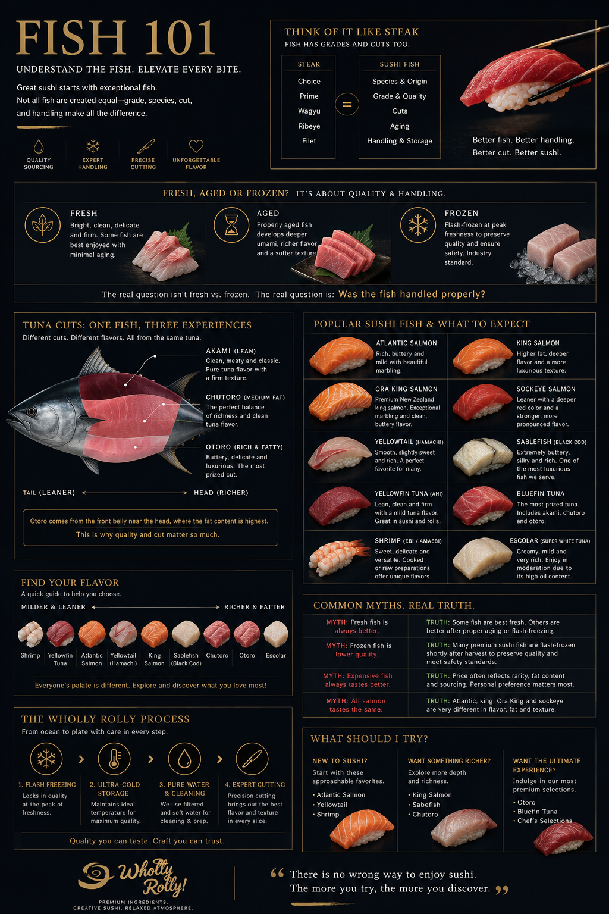

Sushi 101
Everything you wanted to know about sushi — the fish, the rice, the craft. Learn what separates good sushi from exceptional sushi.
Why does any of this matter?
Most people eat sushi without ever thinking about what makes one piece extraordinary and another forgettable. The difference is rarely luck — it comes down to a handful of ingredients and decisions that most restaurants don't bother explaining.
We built Sushi 101 because we believe an informed guest is a better guest. When you understand what goes into great sushi, you taste it differently. You notice what's there — and what isn't.
Pick a topic below and start wherever you're curious.
Choose a topic
Not all fish are created equal
Grades, cuts, species, and why the difference between akami and otoro is like the difference between sirloin and A5 wagyu.
Read more →The foundation of great sushi
The word "sushi" literally refers to the rice — not the fish. Learn why the grain, the water, and the preparation matter more than most people realize.
Read more →The unsung hero of sushi
Premium nori cracks cleanly, smells of ocean and toast, and quietly makes everything around it better. Most people never notice it — until it's missing.
Read more →Wasabi, ginger & soy sauce
Over 95% of the green paste at sushi restaurants isn't real wasabi. The pink ginger is artificially dyed. And most soy sauce was brewed in a steel tank in under six months.
Read more →A quick lesson from our instructors ✨
